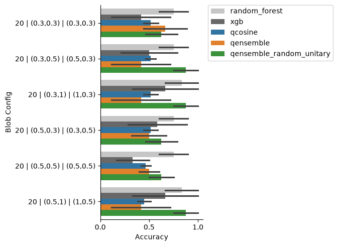
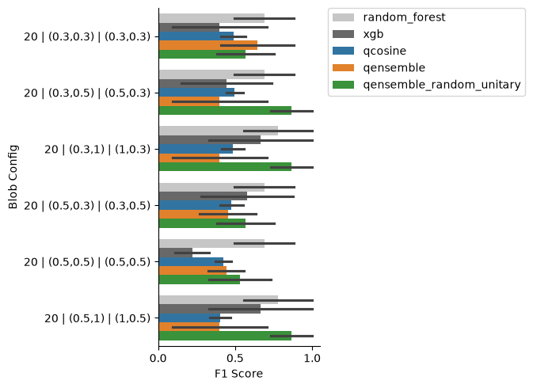
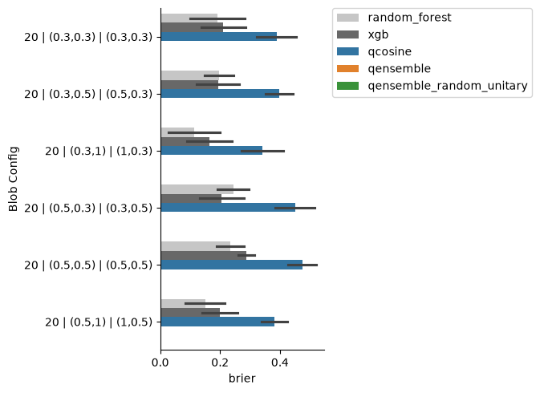

Quantum Ensemble Learning Tutorial#
Overview#
This notebook demonstrates quantum ensemble learning for classification tasks using quantum cosine similarity classifiers. The approach combines multiple quantum classifiers through superposition to improve prediction accuracy and robustness.
Key Concepts#
Quantum Cosine Classifier: Measures similarity between quantum-encoded data points
Quantum Ensemble: Creates superpositions of different training data arrangements
Random Unitary Ensemble: Uses randomly sampled unitaries for more general transformations
References#
This work: https://doi.org/10.1093/bib/bbag280
Original ensemble work: Macaluso et al. IET Quantum Communication
Original Code repository: GitHub
1. Setup and Initialization#
[1]:
%load_ext autoreload
%autoreload 2
[2]:
import os
import numpy as np
import pandas as pd
import pickle
from collections import Counter
from sklearn import datasets
# Note: QBioCode also provides generate_blobs_datasets() for batch generation
# from qbiocode.data_generation import generate_blobs_datasets
from sklearn.model_selection import train_test_split
from sklearn.preprocessing import StandardScaler
# Use QBioCode API
from qbiocode.learning import compute_qensemble
from qbiocode.utils import (
normalize_data,
label_to_array,
prepare_training_set,
retrieve_probabilities
)
# Import helper functions for classical baselines and quantum workflows
from helper_functions import (
evaluation_metrics,
needs_run,
run_random_forest,
run_xgboost,
run_lazy_predict,
run_quantum_cosine,
run_quantum_ensemble,
post_process_results
)
<env>/lib/python3.12/site-packages/tqdm/auto.py:21: TqdmWarning: IProgress not found. Please update jupyter and ipywidgets. See https://ipywidgets.readthedocs.io/en/stable/user_install.html
from .autonotebook import tqdm as notebook_tqdm
[3]:
# Set random seed for reproducibility
seed = 54321
n_shots = 8192
np.random.seed(seed)
[4]:
# Setup directories
DIR_HOME = '.'
DIR_OUTPUT = os.path.join(DIR_HOME, 'experiments')
os.makedirs(DIR_OUTPUT, exist_ok=True)
FILE_PREDICTIONS = os.path.join(DIR_OUTPUT, 'predictions.pkl')
FILE_DATASETS = os.path.join(DIR_OUTPUT, 'datasets.pkl')
2. Configuration Parameters#
Define experiment parameters:
TEST_SIZE: Fraction of data used for testing (0.2 = 20%)
N_SPLITS: Number of cross-validation splits
seed: Random seed for reproducibility
n_shots: Number of quantum measurements per circuit
[5]:
TEST_SIZE = 0.2
N_SPLITS = 5
[6]:
# Load or initialize storage objects
if os.path.exists(FILE_DATASETS):
dataset = pickle.load(open(FILE_DATASETS, 'rb'))
else:
dataset = {}
if os.path.exists(FILE_PREDICTIONS):
predictions = pickle.load(open(FILE_PREDICTIONS, 'rb'))
else:
predictions = {}
3. Dataset Generation#
Generate synthetic blob datasets with:
2D feature space: Easy to visualize
2 classes: Binary classification problem
Varying parameters: Different cluster centers, standard deviations, and sample sizes
[7]:
dataset_name = 'blob'
rerun = False
dataset_sizes = [20]
if (rerun) or (dataset_name not in dataset.keys()):
predictions[dataset_name] = {}
dataset[dataset_name] = {}
for n_size in dataset_sizes:
for std in [0.3, 0.5]:
for p1 in [0.3, 0.5, 1]:
for p2 in [0.3, 0.5, 1]:
centers = [[p1, p2], [p2, p1]]
for split in range(N_SPLITS):
X, y = datasets.make_blobs(
n_samples=n_size,
centers=centers,
n_features=2,
center_box=(0, 1),
cluster_std=std,
random_state=seed
)
X_train, X_test, y_train, y_test = train_test_split(
X, y, stratify=y, random_state=seed, test_size=TEST_SIZE
)
dataset[dataset_name][(split, n_size, std, p1, p2)] = (
pd.DataFrame(X_train),
pd.DataFrame(X_test),
pd.Series(y_train),
pd.Series(y_test)
)
pickle.dump(dataset, open(FILE_DATASETS, 'wb'))
4. Classical Baselines#
Run classical machine learning baselines for comparison.
Random Forest with Grid Search#
[8]:
method = 'random_forest_gs'
dataset_name = 'blob'
rerun = False
if needs_run(predictions, dataset_name, method, rerun):
if dataset_name not in predictions.keys():
predictions[dataset_name] = {}
predictions = run_random_forest(predictions, dataset, method, dataset_name, seed, TEST_SIZE, FILE_PREDICTIONS)
Random Forest with Best Parameters#
[9]:
method = 'random_forest'
dataset_name = 'blob'
rerun = False
# Check if grid search results exist and have data
if 'random_forest_gs' in predictions.get(dataset_name, {}):
# Select best parameters from grid search
preds = predictions[dataset_name]['random_forest_gs']
if len(preds) > 0 and 'best_params' in preds.columns:
try:
params_list = list(preds['best_params'])
if len(params_list) > 0 and any(pd.notna(params_list)):
params_map = dict(zip([str(x) for x in params_list], params_list))
best = dict(Counter([str(x) for x in params_list]))
if len(best) > 0:
best = pd.DataFrame([best.keys(), best.values()], index=['param', 'cnt']).transpose()
params = params_map[best[best.cnt == max(best.cnt)]['param'].iloc[0]]
if needs_run(predictions, dataset_name, method, rerun):
if dataset_name not in predictions.keys():
predictions[dataset_name] = {}
predictions = run_random_forest(predictions, dataset, method, dataset_name, seed, TEST_SIZE, FILE_PREDICTIONS, params=params)
else:
print("No valid parameters found in grid search results. Skipping RF with best parameters.")
else:
print("Grid search parameters list is empty or contains only NaN values. Skipping RF with best parameters.")
except Exception as e:
print(f"Error processing grid search results: {e}. Skipping RF with best parameters.")
else:
print("Random Forest grid search results are empty or missing 'best_params' column. Skipping RF with best parameters.")
else:
print("Random Forest grid search not run. Skipping RF with best parameters.")
XGBoost with Grid Search#
[10]:
method = 'xgb_gs'
dataset_name = 'blob'
rerun = False
if needs_run(predictions, dataset_name, method, rerun):
if dataset_name not in predictions.keys():
predictions[dataset_name] = {}
predictions = run_xgboost(predictions, dataset, method, dataset_name, seed, TEST_SIZE, FILE_PREDICTIONS)
Fitting 3 folds for each of 486 candidates, totalling 1458 fits
XGBoost with Best Parameters#
[11]:
method = 'xgb'
dataset_name = 'blob'
rerun = False
# Import XGB_AVAILABLE flag from helper_functions
from helper_functions import XGB_AVAILABLE
# Check if XGBoost is installed and grid search results exist
if XGB_AVAILABLE and 'xgb_gs' in predictions.get(dataset_name, {}):
# Select best parameters from grid search
preds = predictions[dataset_name]['xgb_gs']
if len(preds) > 0 and 'best_params' in preds.columns:
try:
params_list = list(preds['best_params'])
if len(params_list) > 0 and any(pd.notna(params_list)):
params_map = dict(zip([str(x) for x in params_list], params_list))
best = dict(Counter([str(x) for x in params_list]))
if len(best) > 0:
best = pd.DataFrame([best.keys(), best.values()], index=['param', 'cnt']).transpose()
params = params_map[best[best.cnt == max(best.cnt)]['param'].iloc[0]]
if needs_run(predictions, dataset_name, method, rerun):
if dataset_name not in predictions.keys():
predictions[dataset_name] = {}
predictions = run_xgboost(predictions, dataset, method, dataset_name, seed, TEST_SIZE, FILE_PREDICTIONS, params=params)
else:
print("No valid parameters found in XGBoost grid search results. Skipping XGBoost with best parameters.")
else:
print("XGBoost grid search parameters list is empty or contains only NaN values. Skipping XGBoost with best parameters.")
except Exception as e:
print(f"Error processing XGBoost grid search results: {e}. Skipping XGBoost with best parameters.")
else:
print("XGBoost grid search results are empty or missing 'best_params' column. Skipping XGBoost with best parameters.")
else:
if not XGB_AVAILABLE:
print('XGBoost not installed. Install with: pip install xgboost')
print('Note: On macOS, you may also need to install libomp: brew install libomp')
else:
print('XGBoost grid search not run. Skipping XGBoost with best parameters.')
5. Quantum Cosine Classifier#
The quantum cosine classifier measures similarity between quantum states using:
State Preparation: Encode classical data as quantum states
Controlled-SWAP Test: Measure overlap between training and test states
Hadamard Interference: Extract similarity information
Measurement: Obtain classification probability
Key Parameters:
n_train: Number of training samples (typically 1 for single classifier)n_features: Number of features (must be power of 2)n_shots: Measurement shots for probability estimation
[12]:
method = 'qcosine'
rerun = False
n_trains = [1]
n_features = [2]
if needs_run(predictions, dataset_name, method, rerun):
predictions = run_quantum_cosine(
predictions, dataset, method, dataset_name, seed, TEST_SIZE, FILE_PREDICTIONS,
n_features, n_trains, n_shots
)
6. Quantum Ensemble Method#
The quantum ensemble creates superpositions of different training data arrangements using controlled swap operations.
Algorithm:
Initialize control qubits in superposition (Hadamard gates)
Apply controlled swaps to rearrange training data
Perform cosine similarity test
Measure to obtain ensemble prediction
Key Parameters:
d: Number of control qubits (ensemble depth) - creates 2^d ensemble membersn_swap: Number of swap operations per control qubitn_train: Number of training samples (must be even for balanced mode)mode: Sampling strategy (“balanced”, “unbalanced”, “pair_sample”)
[13]:
method = 'qensemble'
rerun = False
ds = [1, 2]
n_trains = [2, 4]
n_swaps = [1, 2]
n_features = [2]
pca_embed = False
umap_embed = False
device = 'CPU'
if needs_run(predictions, dataset_name, method, rerun):
predictions = run_quantum_ensemble(
predictions, dataset, method, dataset_name, seed, TEST_SIZE, FILE_PREDICTIONS,
ds, n_swaps, n_features, n_trains, n_shots,
pca_embed=pca_embed, umap_embed=umap_embed, device=device
)
7. Random Unitary Ensemble#
This advanced variant uses randomly sampled unitaries instead of fixed swap patterns.
Advantages:
More general transformations of training data
Potentially better exploration of hypothesis space
Theoretical connections to quantum advantage
Trade-offs:
Higher circuit depth and complexity
More difficult to implement on real quantum hardware
Potentially better generalization
Note: This method is more computationally intensive but may provide better results on complex datasets.
[14]:
method = 'qensemble_random_unitary'
rerun = False
ds = [1]
n_trains = [2]
n_swaps = [1]
n_features = [2]
pca_embed = False
umap_embed = False
device = 'CPU'
if needs_run(predictions, dataset_name, method, rerun):
predictions = run_quantum_ensemble(
predictions, dataset, method, dataset_name, seed, TEST_SIZE, FILE_PREDICTIONS,
ds, n_swaps, n_features, n_trains, n_shots,
pca_embed=pca_embed, umap_embed=umap_embed, device=device,
random_unitary=True
)
8. Results Visualization#
Process and visualize the results from all methods. Per Blob configuration, plot the best performing method configuration (maximum median metric score). Saves the full statistics to a CSV file at experiments/Blobs_best_stats.csv
[15]:
# Post-process results
total_results_full, sig_bestmethods_df = post_process_results(predictions, DIR_OUTPUT, datasets=['blob'])
Dataset: blob
Method: random_forest
Method: qcosine
Method: qensemble
Method: qensemble_random_unitary
Method: xgb
XGB: blob : random_forest (n=90) : t=4.87; p=0.0
XGB: blob : qensemble (n=90) : t=1.975; p=0.025
XGB: blob : qensemble_random_unitary (n=90) : t=5.42; p=0.0

XGB: blob : random_forest (n=90) : t=3.977; p=0.0
XGB: blob : qensemble (n=90) : t=2.039; p=0.021
XGB: blob : qensemble_random_unitary (n=90) : t=5.187; p=0.0


Conclusion#
This tutorial demonstrated quantum ensemble learning for classification:
Key Takeaways#
Quantum Ensembling: Ensemble methods leverage quantum superposition to evaluate multiple classifiers simultaneously
Parameter Tuning: Performance depends on careful selection of d, n_swap, and n_train
Trade-offs: Balance between accuracy improvement and computational cost
Scalability: Current methods limited by qubit count (~30-36 for simulation)
Next Steps#
Test on real quantum hardware (IBM Quantum, etc.)
Apply to real-world datasets
Explore error mitigation techniques
Investigate theoretical quantum advantage
Further Reading#
See
README.mdfor detailed documentationRefer to cited papers for theoretical background